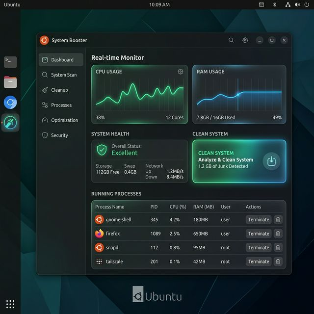

Monitor CPU, RAM, and Disk in real-time. System Booster helps you keep your Linux environment clean, updated, and performing at its peak with a professional GUI.

System Booster is a GUI-based Ubuntu desktop application built to help users maintain system performance with ease. Developed using Python and CustomTkinter, it provides a seamless experience for monitoring resource usage and performing critical maintenance tasks without touching the terminal.
Whether you're a developer, a student, or a power user, System Booster simplifies Ubuntu management through modular tools like real-time tracking, background task support, and root-aware package updates.
Track per-core usage and identify resource-heavy processes instantly with live frequency updates.
Monitor physical memory and swap space usage with detailed breakdowns of cached and free memory.
Scan your system partitions to find large files and monitor write/read speeds across your drives.
Keep your Ubuntu packages up-to-date. Handle APT and Snap updates through a secure GUI interface.
Remove temporary files, old logs, and cached data to free up gigabytes of valuable disk space.
Run custom background scripts and manage system services directly from the dashboard.
Securely handles administrative tasks when needed, ensuring system safety and proper permissions.
A modern, clean interface built with CustomTkinter that feels right at home on any desktop.
System Booster provides high-precision data visualization for your Ubuntu machine.
Monitoring active cores
8GB / 16GB
240GB / 512GB
Latest Version: v1.0.4-stable
File Size: 12.5 MB
Compatible with Ubuntu 20.04, 22.04, and 24.04 LTS.
Download NowRun these commands in your terminal to get started immediately after extraction.
chmod +x install.sh
./install.shIf you prefer running the application without installation:
venv/bin/python main.pyClick the download button above to get the compressed `system-booster.zip` file.
Right-click the file and select "Extract Here" or use `unzip system-booster.zip` in terminal.
Navigate into the extracted folder and open a terminal (Ctrl+Alt+T).
Run `./install.sh` to install dependencies and create a desktop entry.
Search for "System Booster" in Ubuntu Activities and start optimizing!
System Booster is designed to improve usability and simplify maintenance tasks on Ubuntu Linux. The software leverage modular components to provide a rock-solid utility that helps you avoid terminal complexity for day-to-day maintenance.
Whether you need to monitor if a specific background process is slowing down your system or you want to clear gigabytes of junk files, System Booster handles it with a professional, root-aware architecture.
Python 3.10+, CustomTkinter, Psutil
Modular, Event-driven, Root-aware
Useful terminal shortcuts for interacting with the app environment.
./install.sh
Initialize environment and install requirements.
python3 main.py
Run the application directly using system python.
ps -ef | grep python
Check for running background app processes.